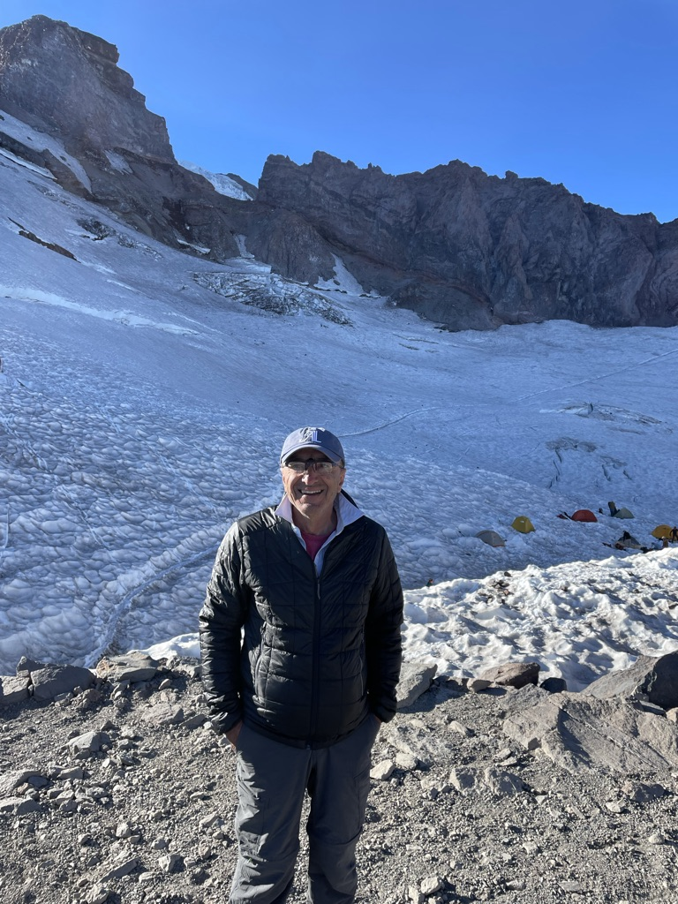

Hiking, Deserts, etc. I climbed Mt. Whitney in May 2002, together with Yazdan Aghaghiri and two other young Iranian scientists, Hossein Hashemi and Kasra Moghareii. Check the pictures out in Yazdan's Mt. Whitney pages.
I have done some hiking and desert crossing in California. A backpacking trip to the Sequoia National Park's Eagle Lake, hiking and desert crossing in the Anza Borrego desert near San Diego, a short backpacking trip to Joshua Tree National Park and many day hikes with the hiking group of the American-Iranian Professionals Association (AIAP) are among these activities. The picture is from a trip to the Anza-Borrego desert.
| Mt. Rainier Here are pictures of that trip. |  |


Copyright © Ali Parsa 1998-2021
All rights reserved